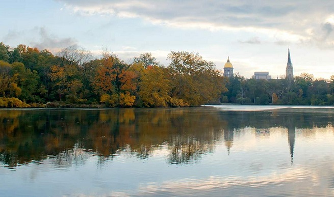
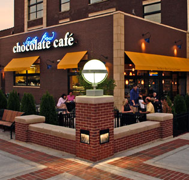

places to visit in South Bend
On Campus Landmarks
The Golden Dome
The Main Building, with its famous Golden Dome, is the centerpiece of Notre Dame's past and present.
The Stadium
The 80,000+ capacity Stadium is one of the most popular and now up-to-date college football facilities in the nation. Public Tours are available too.
St. Joseph and St. Mary's Lakes
On the northwest edge of the Notre Dame campus, St. Mary's Lake to the west and St. Joseph's Lake to the east serve as a park and nature preserve.
Basilica of the Sacred Heart
Notre Dame's magnificent basilica is consistently ranked among the most beautiful university churches in the country.
Our Lady's Grotto

The Grotto is a replica of the famous French shrine at Lourdes and is a wonderful place to spend a few quiet moments.
Campus Attractions
Fitzpatrick Hall
While it is not typically a main visitor attraction, the Fitzpatrick Hall is home to Notre Dame's Engineering students and has many fond memories for Ashish and Sara.
Hesburgh Library
The Hesburgh Library is the campus' fourteen story library with the famous mural "The Word of Life" ("Touchdown Jesus") on the front.
Hammmes Bookstore
The Bookstore is a major campus destination for fans on football game day weekends, and provides everything from Notre Dame apparel to student books. It is conveniently located right next to the Eck Center.
Attractions in South Bend
South Bend History Museum
The South Bend History Museum, which includes a gallery on the history of Notre Dame, is most known for its 38 floor Victorian mansion with period furniture.
Chocolate Cafe
The name says it all. This cafe sells many types of sweets from the South Bend Chocolate Company, as well as specialty hot chocolates and baked desserts.
South Bend Art Museum
The South Bend Museum of Art features a wide range of historical and contemporary art in five galleries.features a full spectrum of historical and contemporary art featured in five galleries.
South Bend/Mishawaka
River Walk
For the exercise lovers, the Riverwalk is great for biking or running, and extends for miles. For everyone else, it provides some very scenic views of the St. Joseph River.